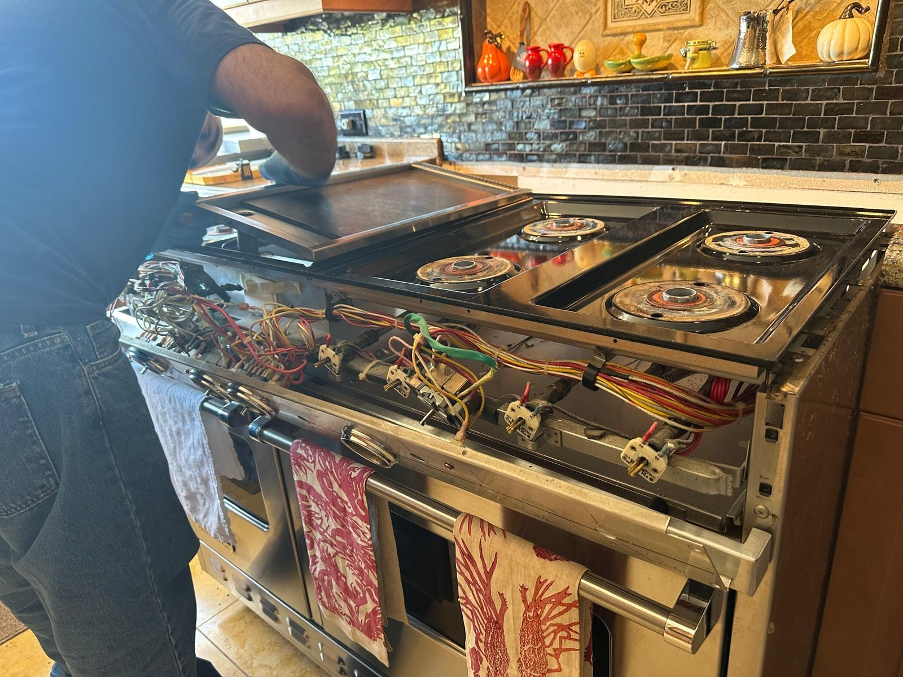

Newport Beach, CA
Thermador Appliance Repair in Orange County, CA
Pro Grand ranges, Sapphire dishwashers, Masterpiece ovens, and Freedom column refrigerators. Same-day service available.
5.0 · 156 Google reviewsMon–Sat, 8am–7pm.

What to expect
- Flat $99 diagnostic feeApplied toward the repair if you approve the work.
- Written quote firstItemized, before any work starts.
- 90-day parts, 30-day laborWarranty on every repair.
- Same-day serviceCall or request online.
Family-owned since 2017 · Licensed, bonded & insured
Recent Thermador Jobs in Orange County
A walkthrough of one Newport Beach kitchen during a Thermador cooktop service call, a Santa Ana cooktop we cleared of nonstop igniter clicking, a San Clemente pro range that needed a new spark module, and a second Newport Beach cooktop whose own spark module and igniter we replaced.
Santa Ana, CA
Thermador Cooktop Nonstop Igniter Clicking Fix
This Thermador gas cooktop clicked continuously as soon as it was powered on. We traced it to the spark ignition switches and module so the burners light cleanly and stop clicking once lit.

San Clemente, CA
Thermador Range Spark Module Replacement
This 48-inch Thermador range clicked without stopping. The cooktop lifts clear of the chassis to reach the spark ignition module and the igniter harness beneath it.

Newport Beach, CA
Thermador Cooktop Spark Module & Igniter Replacement
This Thermador professional gas cooktop clicked non-stop, even with every burner switched off. We replaced the spark module and the failed igniter, so the burners light on demand and go quiet once the flame catches.
What Our Customers Say
From our 156 verified 5-star Google reviews
Great Service. Arrived promptly, fair pricing
Very curteous, knowledgeable and fast. Great service. Recommend him!
He did a fantastic job!!! Thank you so much for your help!
What to Expect During a Thermador Repair Call
From booking to a working Thermador range, oven, or dishwasher. Here is what happens at each stage.
Request a RepairCall or Request Online
Reach us at (949) 629-5365 or submit the contact form. Tell us the Thermador model and the symptom or error code. Same-day scheduling available when a technician is open.On-Site Diagnosis
A technician arrives in a 2-hour window and runs systematic component tests. Thermador diagnostics require hands-on brand experience. We do not guess.Upfront Quote
You get a clear, itemized quote before we start. The $99 diagnostic fee applies toward the repair if you proceed. No surprise charges.Repair and Warranty
Most repairs finish the same day. Every repair carries a 90-day parts and 30-day labor warranty: if the same problem returns within 30 days, we come back at no charge.
Pricing & Discounts
- $99 diagnostic fee: applied toward your repair when you approve the work. If you decide not to proceed, the $99 covers the visit.
- Multi-unit visits: first unit $99, each additional unit on the same visit $49.
- 20% off labor for repeat customers and seniors 60+ (cannot combine with other offers).
Estimates vary by brand, part availability, and diagnosis. Final quote is provided before repair. See full pricing guide
Diagnostic visit$99
- Applied toward the repair when you approve the work
- Itemized written quote before any work starts
- You decide whether to proceed
Pro Grand, Sapphire, and Freedom Column: Every Thermador Line We Service
From Pro Grand ranges and Masterpiece wall ovens to Sapphire dishwashers and Freedom column refrigerators, covering every Thermador product line found in Orange County homes.
- Pro Grand and Pro Harmony Ranges
- PRG, PRD (dual-fuel), and PRL (liquid propane) configurations in 30", 36", 48", and 60" widths. Star Burner ignition issues are the most common service call. We carry Star Burner components for the most popular Pro Grand configurations.
- Masterpiece Wall Ovens
- Single and double Masterpiece wall ovens with M-Pro and Home Connect displays. Convection fan motor wear, oven temperature sensor drift, and control panel failures are the most frequent issues we handle on these units.
- Sapphire and Star-Sapphire Dishwashers
- DWHD series dishwashers with the Star Sapphire clean rating system. Drain pump failures and door latch faults are the primary service calls. The Star Sapphire's interior rack system can also develop latch and roller wear over time.
- Freedom Column Refrigerators and Freezers
- T18, T24, T30, and T36 Freedom column units. The compressor inverter board is the most expensive failure on these units. We also handle evaporator fan, condenser fan, and control board faults on all Freedom Column configurations.
- Star Burner and SGSX Cooktops
- Thermador's signature Star Burner gas cooktops with 5-point star design. Star Burner ignition electrode failures and spark module issues are the primary service calls. We also service SGSX sealed-burner configurations and ContourLine induction tops.
- Professional Rangetops and Induction
- CIT and CET induction cooktops and professional gas rangetops. Touch-glass control failures and zone power board faults are the most common induction issues. Gas rangetop simmer burner and igniters are the most frequent non-induction calls.
Star Burner Ignition, Inverter Boards, and Thermador's Failure Patterns
Thermador appliances are premium products with specific, well-documented failure modes across each product line. Here is what we diagnose most often in Orange County.
- Star Burner Ignition Failure
- The 5-point Star Burner electrode wears or becomes fouled, causing one or more burners to fail to light. The distinctive star-tip design can accumulate grease in the crevices between points. We clean and test before recommending electrode replacement.
- Hot Surface Light Stays On
- When the cooktop's residual heat indicator stays lit after full cooldown, the temperature sensor or relay has failed. This is a safety fault that prevents the indicator from clearing correctly. We diagnose the specific component before any replacement.
- Oven Control Panel Failure
- The Masterpiece and Pro Harmony oven displays fail with age, presenting as a blank screen, unresponsive buttons, or incorrect temperature readouts. Control panel replacement is a half-day job that requires the correct panel assembly for the specific model year.
- Sapphire Dishwasher Drain Pump Failure
- Standing water at the end of a cycle or a fault code indicating drain failure on Sapphire and Star-Sapphire dishwashers. The drain pump is the most common hardware failure on these models. We test the pump before recommending replacement.
- Door Latch and Interlock (Dishwasher)
- The dishwasher door appears closed but the cycle does not start, or the door releases mid-cycle. The door latch interlock micro-switch fails after many open-close cycles. Replacement restores normal function in most cases same-day.
- Freedom Column Inverter Board Failure
- The compressor inverter board on Freedom column units controls motor speed and is the most expensive common failure on these refrigerators. When it fails, the unit stops cooling. We confirm the board failure through diagnostics before recommending a replacement.
- Convection Fan Motor Failure
- Masterpiece and Pro Grand ovens develop convection fan motor wear over time. The first sign is a grinding or rattling noise during bake cycles, followed by uneven heating as the fan slows. Fan motor replacement restores consistent oven performance.
- Touch-Glass Induction Control Failure
- CIT and CET series induction cooktops develop unresponsive touch zones or complete panel failure. The touch-glass assembly integrates the display and control electronics. Replacement requires careful alignment to the cooktop frame.
Thermador's Star Burner and Freedom Column: Engineering That Shapes the Repair
The Thermador Star Burner's 5-point star geometry creates more surface area around the flame ring than a conventional round burner, which is why it heats more evenly, but the star-shaped grate also creates five tight crevices where grease collects. When a Star Burner fails to light, the first step is never a parts order: it's determining whether the tip is fouled or physically worn. We clean the electrode and test ignition on every Star Burner call before we recommend a replacement. Our Thermador cooktop igniter guide covers the DIY checks and repair costs.
The Thermador Freedom Column refrigerators use an inverter-driven variable-speed compressor rather than the fixed-speed units found in most refrigerators. The inverter board adjusts compressor speed based on thermal demand, which is more energy-efficient, but it also introduces a failure mode that fixed-speed units don't have. When a Freedom Column stops cooling, the inverter board is often the cause. These boards are model-specific and expensive; we confirm the fault through diagnostics before recommending the replacement.
Thermador's Sapphire dishwasher uses condensation drying rather than a heating element; it relies on the stainless steel interior absorbing residual heat from the wash cycle. This is more energy-efficient but it means drying performance depends on the door sealing correctly at the end of the cycle. A worn door latch on a Sapphire doesn't just cause a no-start fault; it affects drying performance well before it presents as a full interlock failure.
What Thermador Repairs Cost in Orange County
Thermador repairs cost more than mass-market appliances. A new Pro Grand range starts around $5,000. For Star Burner ignition, dishwasher drain pump, or oven fan faults, repair is almost always the sensible choice.
| Repair Type | Typical Range |
|---|---|
| Service call / diagnostic: Orange County market average (often credited toward repair) | $95 – $150 |
| Star Burner igniter / spark module | $250 – $500 |
| Hot surface light / cooktop relay | $200 – $400 |
| Dishwasher drain pump | $250 – $450 |
| Door latch / interlock (dishwasher) | $250 – $450 |
| Convection fan motor (oven) | $350 – $600 |
| Oven control panel / TFT display | $700 – $1,300 |
| Touch-glass replacement (induction) | $700 – $1,200 |
| Freedom Column inverter board | $800 – $1,400 |
Estimates vary by brand, part availability, and diagnosis. Final quote is provided before repair.
See our full appliance repair cost guide for broader Orange County pricing context.
Thermador repair across Orange County
Universal Appliances Repair Group Inc. provides Thermador appliance repair across Orange County, California, including Pro Grand and Pro Harmony ranges, Masterpiece wall ovens, Sapphire and Star-Sapphire dishwashers, Freedom column refrigerators and freezers, and induction and gas cooktops. Common service covers Star Burner ignition repair, oven control panel replacement, dishwasher drain pump service, and Freedom column compressor inverter repair.
We serve Irvine, Newport Beach, Costa Mesa, Anaheim, Santa Ana, Yorba Linda, Mission Viejo, and surrounding cities, with same-day service available. Call (949) 629-5365 or book online to schedule a Thermador repair visit.
What Thermador Owners Ask Before Booking
Common questions from Orange County Thermador range, dishwasher, and refrigerator owners.
Still have a question? Call (949) 629-5365.
Yes. We service Thermador Pro Grand, Pro Harmony, and Pro Series ranges across Orange County, including dual-fuel (PRD) and all-gas (PRG, PRL) configurations. Same-day appointments are available when a technician is open. Call (949) 629-5365.
Thermador Star Burner ignition repair typically runs $250 to $500 depending on whether the issue is with the electrode, spark module, or burner cap. We carry common Thermador SGSX igniter parts. The $99 diagnostic fee is credited toward the repair if you proceed.
A stuck hot surface light on a Thermador cooktop almost always means the temperature sensor or cooktop relay has failed. The sensor reports the burner as still hot when it has fully cooled. We diagnose the specific component before recommending any part replacement.
Yes. We service Thermador Sapphire and Star-Sapphire dishwashers. Drain pump failures and door latch faults are the most common service calls we handle on these models. Most Thermador dishwasher repairs are completed in one visit.
Yes. The inverter board controls the compressor motor speed on Thermador Freedom Column refrigerators. When it fails, the unit stops cooling. Inverter board replacement is one of the more expensive Thermador refrigerator repairs, typically running $800 to $1,400. We confirm the board is the fault before recommending it.
Thermador oven control panel replacement typically takes half a day to a full day. The panel must be sourced for the exact model. Most jobs require one visit for diagnosis and a follow-up for installation once the part arrives. We confirm the panel failure before ordering.
Yes. Thermador induction cooktop touch-glass can be replaced when cracked or when control zones become unresponsive. This requires disassembling the cooktop assembly. Replacement runs $700 to $1,200 depending on the model.
Yes. We service Thermador Masterpiece single and double wall ovens. Convection fan motor failures, oven temperature sensor drift, and door hinge wear are the most common issues. Control board and display panel faults on Masterpiece models are also within our scope.
The Thermador Kitchen Ecosystem: Other Luxury Brands We Service
Thermador kitchens often include Sub-Zero refrigeration and Miele dishwashers. We service the full luxury kitchen lineup so one call covers every appliance.
- DCSProfessional gas and dual-fuel ranges, cooktops, and California-built outdoor grills. Bake igniter and sealed-burner specialists.
- Sub-ZeroBuilt-in refrigerators, wine storage, and column units.
- WolfDual-fuel ranges, wall ovens, and cooktops.
- MieleGerman luxury dishwashers, washers, dryers, and ovens.
- VikingPro-style ranges, wall ovens, and built-in refrigerators.
- DacorSamsung-backed American luxury brand. Heritage ranges, ovens, and refrigerators.
Need Thermador Repair in Orange County?
Same-day service available. Call now or book online. A technician will confirm your appointment within the hour.
Call (949) 629-5365
Request a Repair
Mon–Sat, 8am–7pm